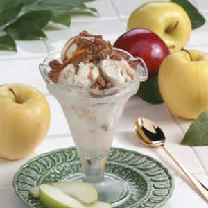

ICE-CREAM
|

- Ingredients
- * 1-1/4 cups milk
- * 3/4 cup sugar
- * 1-3/4 cups heavy whipping cream
- * 1-1/2 teaspoons vanilla extract
- * 1 jar (12 ounces) caramel ice cream topping
- Directions
- * For streusel, combine the brown sugar, flour and cinnamon in a bowl; cut in 3 tablespoons butter until mixture resembles coarse crumbs. Stir in pecans.
* Press into a 9-in. pie plate. Bake at 350 degree for 10-12 minutes or until the edges are browned. Cool slightly; break into small pieces. Cool completely.
* In a small skillet, melt remaining butter. Stir in the apple, sugar and cinnamon. Cook for 8-10 minutes or until apple is tender; cool.
* In a large saucepan, heat milk to 175 degree stir in sugar until dissolved. Refrigerate for several hours or overnight. Cool. In a large bowl, combine the milk mixture; cream and vanilla. Refrigerate for several hours or overnight.
* Fill cylinder of ice cream freezer two-thirds full; freeze according to manufacturer's directions. Refrigerate remaining mixture until ready to freeze. Add apple mixture to each batch of ice cream; freeze 5 minutes longer.
* Spoon a third of the ice cream into a freezer container. Top with a third of the streusel mixture. Drizzle with a third of the caramel topping. Repeat layers once. Top with remaining ice cream. With a spatula, cut through ice cream in several places to gently swirl layers. Cover; freeze overnight. Garnish with the remaining streusel and caramel topping. Yield: 1-1/2 quarts.